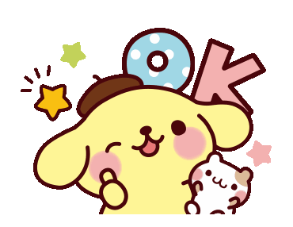

Bienvenid@ a mi proyecto de Cultura Digital II
En este espacio junte algunas de mis cosas favoritas.
Acerca de Sanrio y sus personajes.
¡Explora cada seccion y dejate llevar por la ternura! 💗
Personajes de Sanrio
My Sweet Piano
Pompompurin
Personajes Desconocidos
